Cơ chế màn theo world
Mỗi world thêm cơ chế sân riêng (tutorial eTutorialType 11–36): W1 Forest — Bone Wall (mua/phá 2 vàng/ô), Orc Totem (hồi 10 %/s), minecart, chest; W2 Desert — Territory (lãnh thổ địch, chiếm bằng khối khoá), tàu Steelrail; W3 Frost Ruins — Frozen Zone (khối đó
Mô tả
- Mỗi world thêm cơ chế sân riêng (tutorial eTutorialType 11–36): W1 Forest — Bone Wall (mua/phá 2 vàng/ô), Orc Totem (hồi 10 %/s), minecart, chest; W2 Desert — Territory (lãnh thổ địch, chiếm bằng khối khoá), tàu Steelrail; W3 Frost Ruins — Frozen Zone (khối đóng băng sau 3 vòng), Ice Block (2x2 di chuyển), trap (Poison well, Flame, Swing axe, Wall arrow, Ground saw, Rolling log, Frost well), Wind Zone, Snow Brazier (tốn HP); W4 Sealed Citadel — Charging Station + Circuit (điện lan qua khối), Weather Simulator (Firestorm/Acid rain/Blizzard/Thunderstorm), Block/Gold/Tower factory, Overcharge conduit, Huge fan, Ancient Defense Towers (malfunction tháp), Cleanse system, Ember Stone extractor, Corrupted altar; W5 Void Depths — Void Zone (khối chìm tạo đất), Portal, Energy Crystal (5 hệ + Void/Corrupted/Gold/Shard), Void Army, Crystallized Wood; Chaos Realm: map ngẫu nhiên các vùng.
- Object trong scene đăng ký GridSystem (RegisterGridObject / RegisterPlayerInteractableObject / RegisterAncientMechConnectPosition / AddVoidZone) và MapManager. Tương tác: OnRayClickHold (Bone wall, Brazier), khối nối điện (OnAncientCircuitUpdated: khối chạm charging station → lan điện tới máy), Ice Block kéo (OnIceBlockMoveFinish), Ancient tower đếm vòng (ACTIVATE_IN_ROUND) rồi bắn tháp gây malfunction {0} s; Security System tắt chúng. Energy crystal là 'monster' persistent: phá → boost tile hệ + hiệu ứng vùng; Void Crystal → Void Core card; Gold crystal → vàng mỗi 10 % HP; Mysterious Shard → Academy chest (cosmoShard: 15 + 25n). Territory: enemyTerritory mesh; khối khoá cạnh → chiếm.
Hình minh hoạ
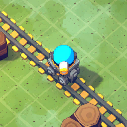
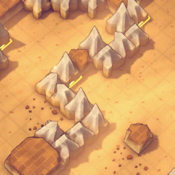
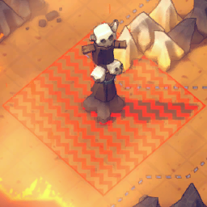
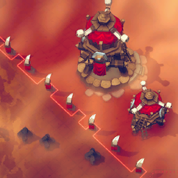
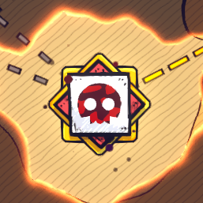
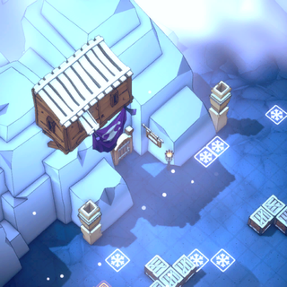
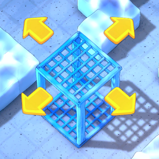
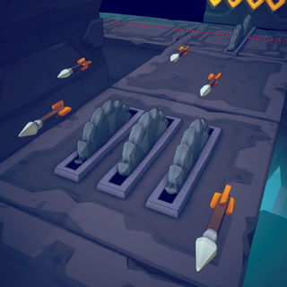
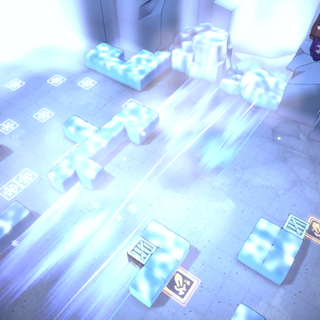
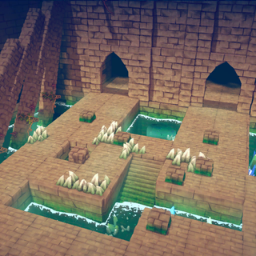
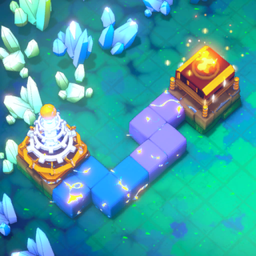

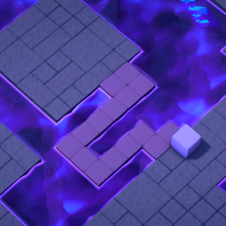
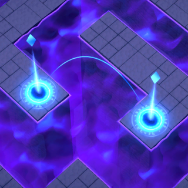
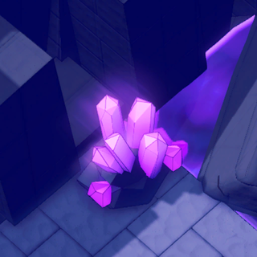
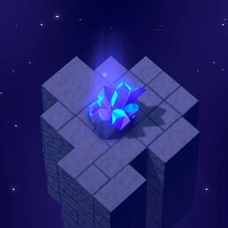
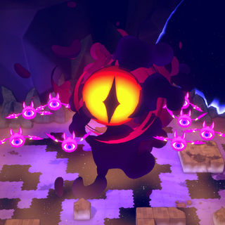
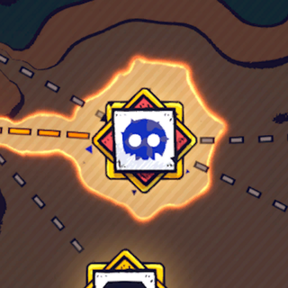
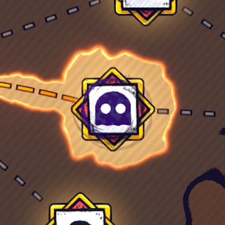
Lưu ý
Mở khóa & điểm vào
Theo world; mỗi mechanic có tutorial lần đầu (QueueTutorialForEvent).
Điểm vào:
- EnvScene prefab đặt sẵn object (APlayerInteractableObjects: click/giữ)
- AStageScript.CR_RoundStart/CR_RoundEnd
Cách hoạt động
- Circuit / máy điện (W4): GridSystem.RegisterAncientMechConnectPosition; OnAncientCircuitUpdated lan điện qua khối liền kề (ToggleElectricConnectIndicator) → Máy bật: Block Factory (+1 hand, +1 khối/lượt), Gold Furnace (15 ngay, +30/lượt), Tower Assembly (+1 hand, 2x2 tower/lượt), Overcharge conduit (15 s/lần), Fan (2 chill/s), Weather Simulator (Fire tornado 2 dmg/0.5 s; Acid rain 0.5 % HP/s ≤50; Blizzard 1 chill/s;
- Trap Frost Ruins (W3): Poison well {0} % HP/s ≤100; Flame trap {0} fire + burn {1} s, tháp malfunction 5 s; Swing axe {0} ice + 15 % Vulnerable {1} s; Wall arrow mỗi {0} s {1} electric; Ground saw {0}+{1} % HP ≤100; Rolling log {0}+10 % HP ≤1000 + stun, reset mỗi vòng; Frost well {0} chill → Ice Block: 2x2 tower, kéo tự do ở chuẩn bị; kéo trong battle → malfunction 5 s → Wind zone tốc độ theo hướng; Snow Brazier giữ
- Territory (W2): GridSystem.dic_Territory PLAYER/ENEMY; enemyTerritory mesh đỏ → Đặt khối cạnh vùng địch → khi khoá, CheckUpdateTerritory chiếm ô (vfx_TerritoryClear) → UI_ToggleControlTipError_InEnemyTerritory khi đặt vào (Quy tắc: Shard Corrupt L3: ô kề corrupted = địch)
- Void Zone & crystal (W5): AddVoidZone/IsInVoidZone; khối đặt lên chìm → tạo đất (Obj_VoidGrid) → Energy Crystal (75/76) HP 540/3480: phá → boost tile hệ + vùng hiệu ứng (burn 1 s, 2 chill/s, 1 % HP poison, 20 % fragile/charge) → Void Crystal (74) 680 HP → Void Core card (3052) tạo/đổ void; Corrupted crystal ×2 crystal + corrupted tile; Gold crystal {0} vàng/10 %; Mysterious Shard → Academy chest (GetCosmoShardNeededF
- Minecart / Bone wall / Totem / Chest (W1): Train cart: đặt tháp lên xe, tự chạy khi battle, nhận buff (eTrainCartBuffType) → Bone Wall: mỗi ô {0} vàng để phá (loc: 2) → Orc Totem hồi 10 %/s quái trong tầm → Chest: click mở (CHEST_HAND_FULL)
Luồng chi tiết theo code
Object trong scene đăng ký GridSystem (RegisterGridObject / RegisterPlayerInteractableObject / RegisterAncientMechConnectPosition / AddVoidZone) và MapManager. Tương tác: OnRayClickHold (Bone wall, Brazier), khối nối điện (OnAncientCircuitUpdated: khối chạm charging station → lan điện tới máy), Ice Block kéo (OnIceBlockMoveFinish), Ancient tower đếm vòng (ACTIVATE_IN_ROUND) rồi bắn tháp gây malfunction {0} s; Security System tắt chúng. Energy crystal là 'monster' persistent: phá → boost tile hệ + hiệu ứng vùng; Void Crystal → Void Core card; Gold crystal → vàng mỗi 10 % HP; Mysterious Shard → Academy chest (cosmoShard: 15 + 25n). Territory: enemyTerritory mesh; khối khoá cạnh → chiếm.
Phần thưởng
Thưởng
| Ngữ cảnh | Thưởng | Bằng chứng |
|---|---|---|
| Ember Stone Extractor | +{0} Ember Stone mỗi lượt bật khi clear | EMBER_STONE_EXTRACTOR_DESC |
| Golden Crystal | {0} vàng mỗi 10 % HP | GOLD_CRYSTAL_DESC |
Phần thưởng theo code
| Ngữ cảnh | Phần thưởng | Evidence |
|---|---|---|
| Ember Stone Extractor | {0} Ember Stone mỗi lượt bật khi clear | EMBER_STONE_EXTRACTOR_DESC |
| Golden Crystal | {0} vàng mỗi 10 % HP | GOLD_CRYSTAL_DESC |
Số liệu chính
| Chỉ số | Giá trị | Nguồn |
|---|---|---|
| Gold Furnace | 15 ngay + 30/lượt | GOLD_FACTORY_DESC |
| Weather: Fire tornado / Acid rain / Blizzard / Thunderstorm | 2 fire/0.5 s + burn 5 s; 0.5 % HP/s ≤50; 1 chill/s; 5 % charge/s + 5 electric | WEATHER_DEVICE_* |
| Academy chest shard | 15 + 25 × createdAcademyChestCount | IngameData.GetCosmoShardNeededForNextAcademyChest (0x19·n + 0xf) |
| NPC tower HP | Fireball 1600, Sniper 840, Defense 200, Thunder 2400, Freeze 840; crystal 540/3480/680/350 | MonsterData_051..055, 074..076, 085 |
| eTutorialType mechanic | TERRITORY 11, BONE_WALL 12, ORC_TOTEM 13, BLOCK_RUNES 14, SNOW_BRAZIER 15, FREEZING_ZONE 16, ICE_CUBE 17, RUIN_TRAPS 18, WIND_ZONE 19, SEALED_CITY 23, ANCIENT_DEFENCE_TOWERS 24, CIRCUIT_SYSTEM 25, CORRUPTED_FLAME_ALTAR 26, VOID_ZONE 32, PORTAL 33, ENERGY_CRYSTAL 34, VOID_CRYSTAL 35, VOID_ARMY 36 | enum |
Ghi chú thiết kế
- Lưu trữ: PlayerRecord.cosmoPortalTeleportedMonsterCount
- Lưu trữ: list_FinishedTutorial
Use case (5)
Bấm vào từng use case để mở. Mở/đóng tất cả
UC-01 Circuit / máy điện (W4)
Các bước- GridSystem.RegisterAncientMechConnectPosition; OnAncientCircuitUpdated lan điện qua khối liền kề (ToggleElectricConnectIndicator)
- Máy bật: Block Factory (+1 hand, +1 khối/lượt), Gold Furnace (15 ngay, +30/lượt), Tower Assembly (+1 hand, 2x2 tower/lượt), Overcharge conduit (15 s/lần), Fan (2 chill/s), Weather Simulator (Fire tornado 2 dmg/0.5 s; Acid rain 0.5 % HP/s ≤50; Blizzard 1 chill/s; Thunderstorm 5 % charge/s, 5 dmg), Purify mixer, Ember Stone extractor (+{0} Ember Stone/lượt bật), Electric tower (3 quái/0.5 s, +1 dmg/lượt), Blazing Brazier, Security System
- Conduit Pipe truyền điện qua
| Actor | Player |
|---|---|
| Trigger | Khối nối Charging Station |
| Quy tắc / số liệu | Shard Boss W4 'Simulation Prohibited' máy thời tiết chỉ 1 vòng |
| Evidence | Obj_AncientMech_ElectricTower; Obj_AncientMech_CleanseSystem; GridSystem.IsHaveAncientMechAtPosition; loc LevelMechanics |
UC-02 Trap Frost Ruins (W3)
Các bước- Poison well {0} % HP/s ≤100; Flame trap {0} fire + burn {1} s, tháp malfunction 5 s; Swing axe {0} ice + 15 % Vulnerable {1} s; Wall arrow mỗi {0} s {1} electric; Ground saw {0}+{1} % HP ≤100; Rolling log {0}+10 % HP ≤1000 + stun, reset mỗi vòng; Frost well {0} chill
- Ice Block: 2x2 tower, kéo tự do ở chuẩn bị; kéo trong battle → malfunction 5 s
- Wind zone tốc độ theo hướng; Snow Brazier giữ để kích, tốn {0} HP
| Actor | System |
|---|---|
| Trigger | Quái/tháp đi qua |
| Quy tắc / số liệu | Achievement LOG_TRAP_KILL_MORE_THAN_X |
| Evidence | Obj_RuneTrap_Frost; Obj_RuneTrap_MonsterEffect; eGameEvents.OnIceBlockMoveFinish; loc TRAP_* |
UC-03 Territory (W2)
Các bước- GridSystem.dic_Territory PLAYER/ENEMY; enemyTerritory mesh đỏ
- Đặt khối cạnh vùng địch → khi khoá, CheckUpdateTerritory chiếm ô (vfx_TerritoryClear)
- UI_ToggleControlTipError_InEnemyTerritory khi đặt vào
| Actor | System |
|---|---|
| Trigger | OnTetrisLocked / RequestInitializeTerritory |
| Điều kiện | isTerritoryLevel |
| Quy tắc / số liệu | Shard Corrupt L3: ô kề corrupted = địch |
| Evidence | GridSystem.UpdateTerritory; GridSystem.SetTerritoryAtPosition; ObjectPlacementHandler.CheckIsInEnemyTerritory |
UC-04 Void Zone & crystal (W5)
Các bước- AddVoidZone/IsInVoidZone; khối đặt lên chìm → tạo đất (Obj_VoidGrid)
- Energy Crystal (75/76) HP 540/3480: phá → boost tile hệ + vùng hiệu ứng (burn 1 s, 2 chill/s, 1 % HP poison, 20 % fragile/charge)
- Void Crystal (74) 680 HP → Void Core card (3052) tạo/đổ void; Corrupted crystal ×2 crystal + corrupted tile; Gold crystal {0} vàng/10 %; Mysterious Shard → Academy chest (GetCosmoShardNeededForNextAcademyChest = 15 + 25×n)
- Portal (Obj_PathPortal): quái có thể dùng; Player Portal (Void Flame)
| Actor | Player |
|---|---|
| Trigger | Đặt khối lên void / tấn công crystal |
| Evidence | GridSystem.AddVoidZone; ACosmoShardCrystal; IngameData.GetCosmoShardNeededForNextAcademyChest; Obj_PathPortal.ePortalType |
UC-05 Minecart / Bone wall / Totem / Chest (W1)
Các bước- Train cart: đặt tháp lên xe, tự chạy khi battle, nhận buff (eTrainCartBuffType)
- Bone Wall: mỗi ô {0} vàng để phá (loc: 2)
- Orc Totem hồi 10 %/s quái trong tầm
- Chest: click mở (CHEST_HAND_FULL)
| Actor | Player |
|---|---|
| Evidence | Obj_TrainCart; Obj_TrainSystem; loc BONE_WALL_DESC; DiscoverRewardHandler |
Cấu hình (5)
Gộp mọi nguồn: const trong code, JSON mặc định trong Resources, bảng static, storage key, AB test, cờ server.
| Nguồn | Key | Kiểu | Giá trị | Ý nghĩa | Nơi định nghĩa |
|---|---|---|---|---|---|
| loc | Gold Furnace | int | 15 ngay + 30/lượt | GOLD_FACTORY_DESC | |
| loc | Weather: Fire tornado / Acid rain / Blizzard / Thunderstorm | text | 2 fire/0.5 s + burn 5 s; 0.5 % HP/s ≤50; 1 chill/s; 5 % charge/s + 5 electric | WEATHER_DEVICE_* | |
| code const | Academy chest shard | formula | 15 + 25 × createdAcademyChestCount | Mysterious Shard cần cho chest tiếp theo | IngameData.GetCosmoShardNeededForNextAcademyChest (0x19·n + 0xf) |
| asset | NPC tower HP | int | Fireball 1600, Sniper 840, Defense 200, Thunder 2400, Freeze 840; crystal 540/3480/680/350 | MonsterData_051..055, 074..076, 085 | |
| enum | eTutorialType mechanic | enum | TERRITORY 11, BONE_WALL 12, ORC_TOTEM 13, BLOCK_RUNES 14, SNOW_BRAZIER 15, FREEZING_ZONE 16, ICE_CUBE 17, RUIN_TRAPS 18, WIND_ZONE 19, SEALED_CITY 23, ANCIENT_DEFENCE_TOWERS 24, CIRCUIT_SYSTEM 25, CORRUPTED_FLAME_ALTAR 26, VOID_ZONE 32, PORTAL 33, ENERGY_CRYSTAL 34, VOID_CRYSTAL 35, VOID_ARMY 36 | enum |
Giao diện (UI)
| Element | Class | Mục đích |
|---|---|---|
| Tooltip object | UI_SetMouseTooltipTarget / 3D tooltip | Mô tả mechanic từ bảng LevelMechanics |
Storage keys
PlayerRecord.cosmoPortalTeleportedMonsterCount list_FinishedTutorial
Chưa đọc được / ghi chú
- Tham số {0}/{1} trong loc trap/weather được truyền từ prefab từng object — không có trong SO
- Danh sách object trong từng EnvScene chưa trích từ scene
Tính năng liên quan
Màn & wave (Stages) Boss & màn boss Rune & buff tile (PowerGrid) Dựng mê cung (khối Tetris) Tutorial & Journal hướng dẫn
Nguồn đã đọc
- appendix/loc-en.txt (LevelMechanics, GameTutorial)
- features/GridSystem.md
- features/Obj_TrainSystem.md
- features/Obj_AncientMech_ElectricTower.md